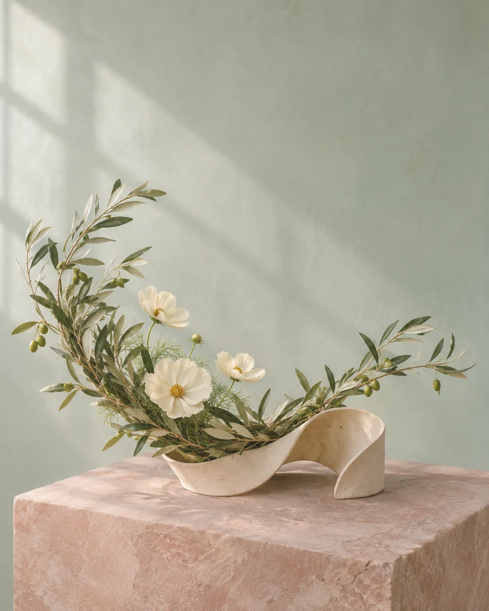
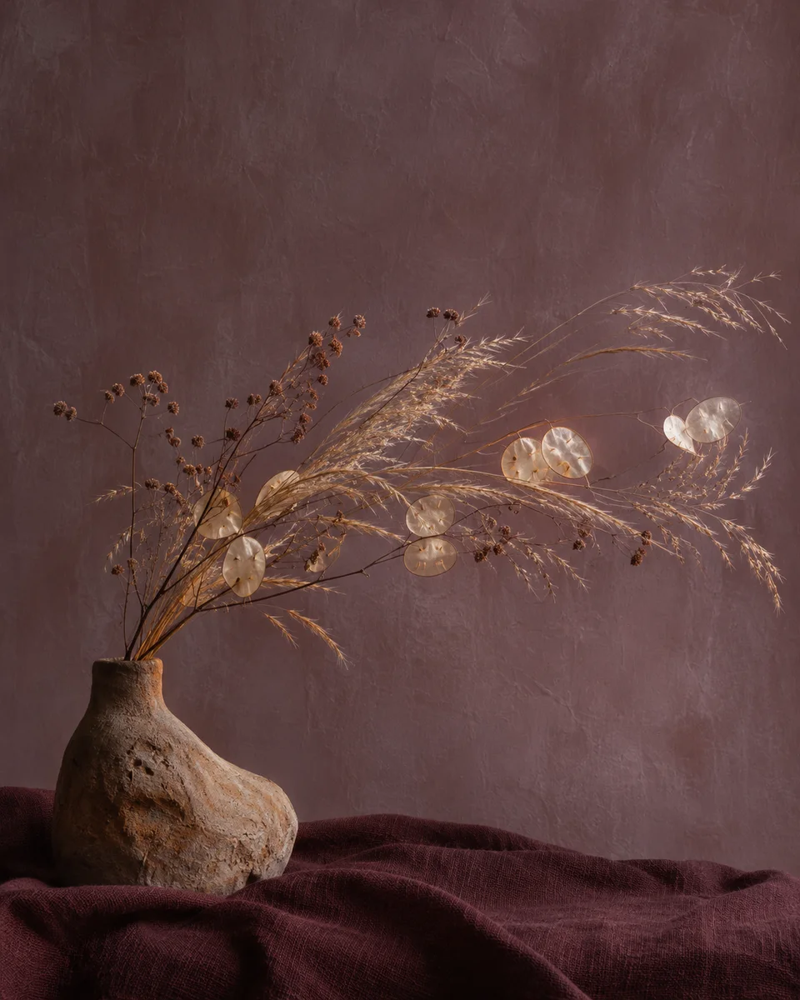
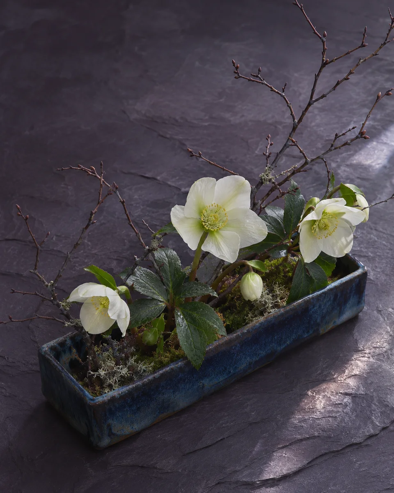
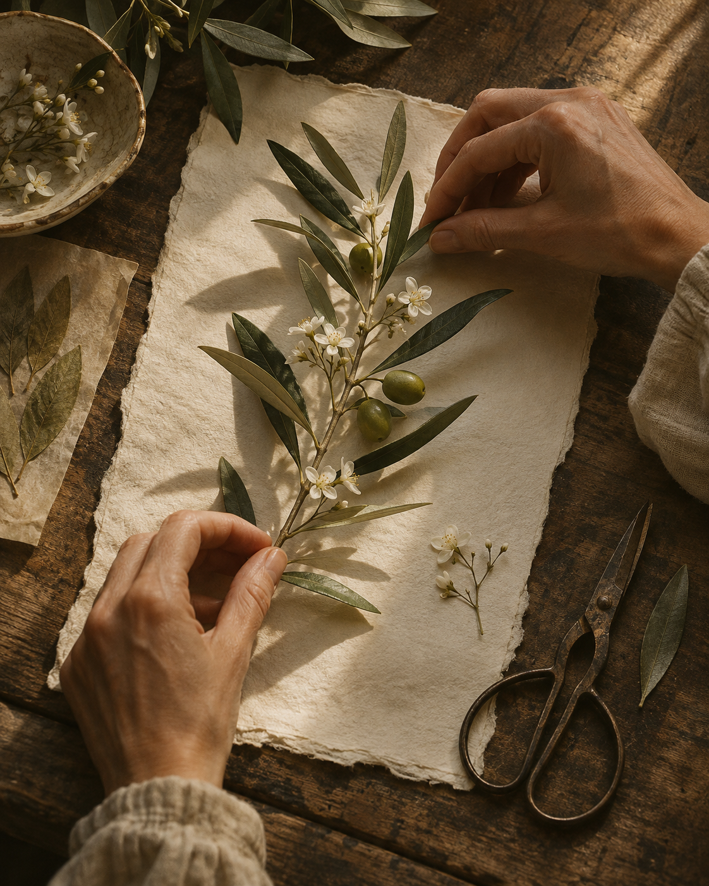

Tra le foglie
Rami d’ulivo e piccoli fiori bianchi, disposti in un recipiente ondulato di ceramica chiara.
Atelier botanico
Rami, fiori e silenzi.
Composizioni che seguono le stagioni.
Ogni composizione comincia con un dettaglio: la curva di un ramo, il rovescio di una foglia, un fiore appena aperto. Nell’atelier li raccogliamo in piccoli studi botanici che seguono le stagioni.
Scopri le composizioni
L’atelier
Foglie a mezzavoce è un atelier botanico immaginario. Qui una composizione comincia da un ramo storto, da una foglia voltata o da un fiore che ha appena finito di aprirsi. Il resto si dispone intorno, con un po’ di spazio tra uno stelo e l’altro.
Conosci l’atelierComposizioni di stagione
Rami d’ulivo e piccoli fiori bianchi, disposti in un recipiente ondulato di ceramica chiara.

Graminacee, capsule e steli secchi per portare in casa la luce di fine estate.

Ellebori e rami spogli. Una composizione bassa per la tavola d’inverno.

Laboratori
Due incontri immaginati per lavorare con le mani e osservare da vicino la forma delle piante.
Si parte dalla curva di un ramo per trovare un equilibrio tra pochi steli, un vaso e lo spazio che li circonda.
Si compongono foglie pressate e piccoli appunti su carta, per custodire tracce della stagione.